We have seen how to access the data and perform some basic manipulations. In practice, datasets are often large enough to make it difficult to grasp their structure or patterns by simply printing rows or scanning tables. This is where descriptive statistics and visualization techniques become essential tools.
Describing and visualizing the data helps us:
Gather insights on the dataset
Understand the main characteristics of each variable
Detect missing or anomalous values
Identify relationships between variables
Spot trends or clusters of data which are similar
Guide the choice of pre-processing and further modeling
To make some example, we will consider a simple dataset where weights (in pounds), heights (in inches), and sex of various subjects. The dataset will look like this:
import pandas as pdhw=pd.read_csv(DATA +"height_weight_pounds.csv")hw.info()hw.head()
A first way to describe data is to calculate the number of times each value appears. These are called “absolute frequencies”. Absolute frequencies are generally calculated for discrete variables where observations take a finite number of values.
Let
a_1, a_2, \ldots, a_n
be the values that the variable under consideration can take.
The absolute frequencies n_i are defined as the number of times that a_i appears in the sample. Note that:
\sum_i n_i = N
Where N is the total number of elements in the sample.
The data frequencies can be graphically represented using a bar chart that places the unique value (a_i) on the x-axis and represents the absolute frequency n_i as the height of the bar.
In our example:
from matplotlib import pyplot as plthw['height'].value_counts().sort_index().plot.bar(figsize=(18,6))plt.grid()plt.show()
The graph above tells us something about the number of occurrences of a given value and also gives us an idea of which values are more or less frequent. We see that the data follows a “bell” shape. We will often find this type of shape and will discuss it further later.
Relative Frequencies
Absolute frequencies allow us to get a more precise idea of how data are distributed, regardless of the size of our sample. For example, we know that the sample contains more individuals with a height of 167.64\ cm than individuals with a height of 193.04\ cm. However, this representation is linked to the total number of elements contained in the sample. For example, a similarly distributed sample, but with more observations, will result in larger absolute frequencies. We can obtain a representation independent of the sample size by analyzing relative frequencies, defined as follows:
By plotting the relative frequencies using a bar chart, we obtain a graph very similar to the one showing absolute frequencies, but with a different scale on the y-axis.
Relative frequency bar charts are useful for comparing different samples. For example, we can consider the heights of men and women in the weights-and-heights dataset:
pmf_height_m = hw[hw['sex']=='M']['height'].value_counts(normalize=True).sort_index()pmf_height_f = hw[hw['sex']=='F']['height'].value_counts(normalize=True).sort_index()plt.figure(figsize=(18,6))# We add and subtract 0.2 from the indices to "shift" the bars and make them# visible when overlapping. We also set alpha=0.9 to make the bars# partially transparent.plt.bar(pmf_height_m.index+0.2, pmf_height_m.values, width=0.5, alpha=0.9)plt.bar(pmf_height_f.index-0.2, pmf_height_f.values, width=0.5, alpha=0.9)plt.xticks(hw['height'].unique(), rotation='vertical')plt.legend(['M','F']) # Display a legendplt.grid()plt.show()
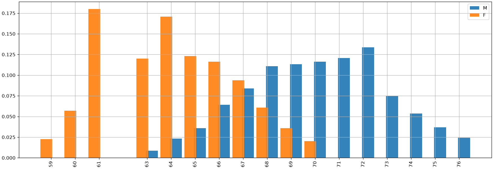
From the comparison above, we can already make some qualitative observations about the two samples. In particular, we notice (unsurprisingly) that men are generally taller than women. This doesn’t mean that there aren’t men who are shorter than some women, or vice versa, but such cases are reasonably less frequent.
Barplots and Stacked Barplots
We can also used barplots and stacked barplots to count the number of elements in a given class. For instance, a barplot counting the number of subjects in the “male” or “female” class looks like this:
import matplotlib.pyplot as plt# Calculate proportionssex_counts = hw['sex'].value_counts()# Create bar plotsex_counts.plot.bar(color=['steelblue', 'salmon'])# Customize plotplt.title('Proportion of Males and Females')plt.ylabel('Proportion')plt.xticks(rotation=0)plt.grid(axis='y', linestyle='--', alpha=0.5)plt.show()
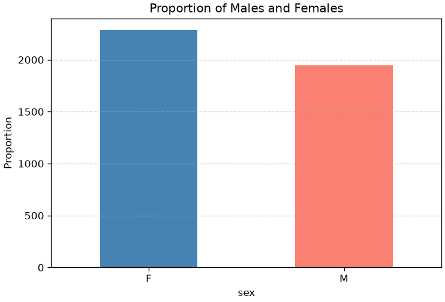
We can obtain the normalized version by passing normalize=True to value_counts:
import matplotlib.pyplot as plt# Calculate proportionssex_counts = hw['sex'].value_counts(normalize=True)# Create bar plotsex_counts.plot.bar(color=['steelblue', 'salmon'])# Customize plotplt.title('Absolute Frequencies of Males and Females')plt.ylabel('Absolute Frequency')plt.xticks(rotation=0)plt.ylim(0, 1)plt.grid(axis='y', linestyle='--', alpha=0.5)plt.show()
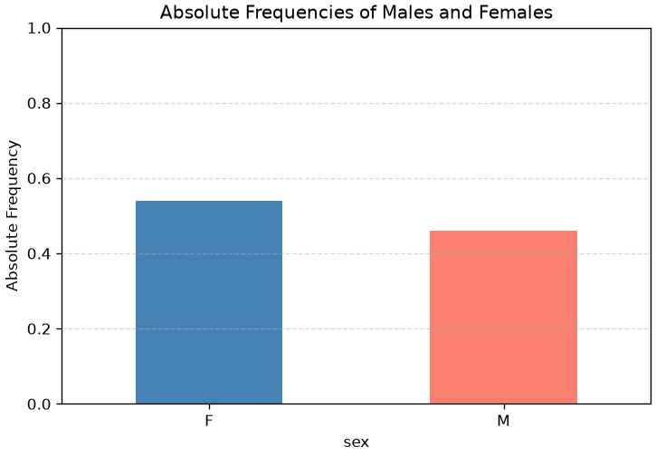
When numbers sum to one, another popular visualization is that of the stacked plot:
import matplotlib.pyplot as plt# Compute proportions grouped by a single dummy categorysex_props = hw.groupby(lambda _: 'All')['sex'].value_counts(normalize=True).unstack()# Plot as stacked barsex_props.plot(kind='bar', stacked=True, color=['steelblue', 'salmon'])# Customize plotplt.title('Stacked Bar: Proportion of Males and Females')plt.ylabel('Proportion')plt.xticks(rotation=0)plt.ylim(0, 1)plt.legend(title='Sex', loc='upper center', bbox_to_anchor=(0.5, -0.15), ncol=2)plt.grid(axis='y', linestyle='--', alpha=0.5)plt.show()
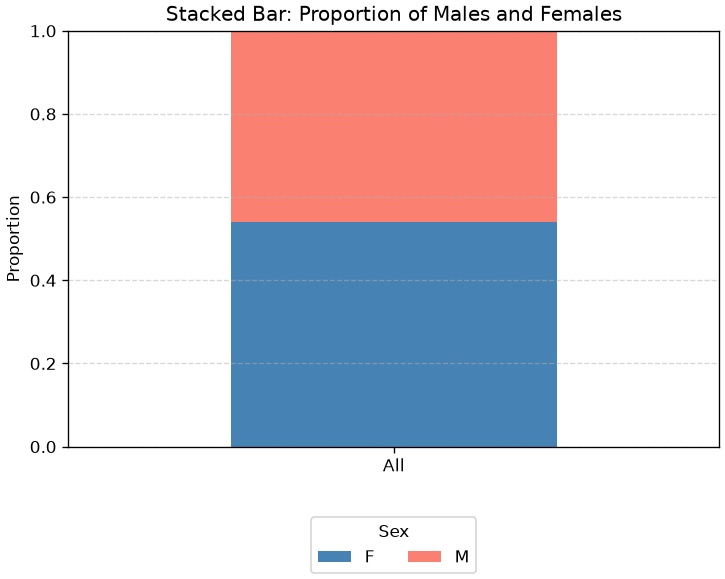
Pie Charts
As an alternative to bar charts, relative frequencies can also be displayed using pie charts.
Pie charts works better when we have fewer elements. For instance, let’s say we want to show the percentage of males and females in our dataset:
hw['sex'].value_counts(normalize=True).plot.pie(autopct='%1.1f%%', labels=['Male', 'Female'])plt.title('Proportion of Males and Females')plt.ylabel('')plt.show()
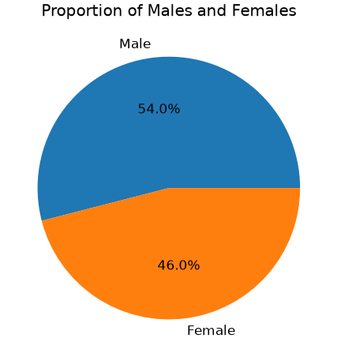
While pie charts can be intuitive when there is no specific ordering of the elements we want to show, they often introduce more problems than other chart types. In particular, it’s difficult for the human eye to accurately compare angles or assess relative sizes—especially when slices are similar in proportion or not arranged consistently. This can lead to misinterpretation or visual clutter, making bar charts or other alternatives generally more effective for comparing categories.
An illustrative example is below:
import matplotlib.pyplot as plt# Sample data: three categories with similar proportionssizes = [30, 34, 36]labels = ['Category A', 'Category B', 'Category C']colors = ['lightcoral', 'gold', 'skyblue']fig, axs = plt.subplots(1, 2, figsize=(12,6))# Pie chart without labelsaxs[0].pie(sizes, colors=colors)axs[0].set_title('Pie Chart Without Labels')# Pie chart with labelsaxs[1].pie(sizes, labels=labels, colors=colors, autopct='%1.1f%%')axs[1].set_title('Pie Chart With Labels')plt.suptitle('Same Data, Different Perception')plt.show()
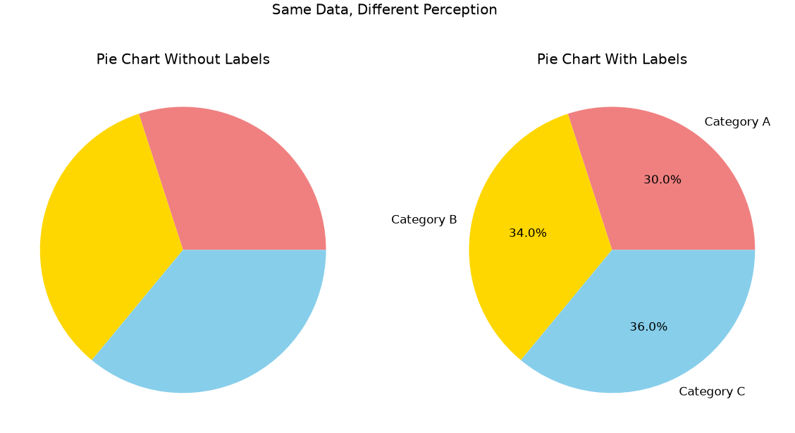
The figure shows the same plot with and without labels. Without labels, even significant differences as 4% are not easy to spot.
Compare the pie chart above with the bar chart below. Where is it easier to spot differences, even without labels?
import matplotlib.pyplot as pltfig, ax = plt.subplots(figsize=(6,6))ax.bar(range(len(sizes)), sizes, color=colors)ax.set_title('Bar Chart')plt.show()
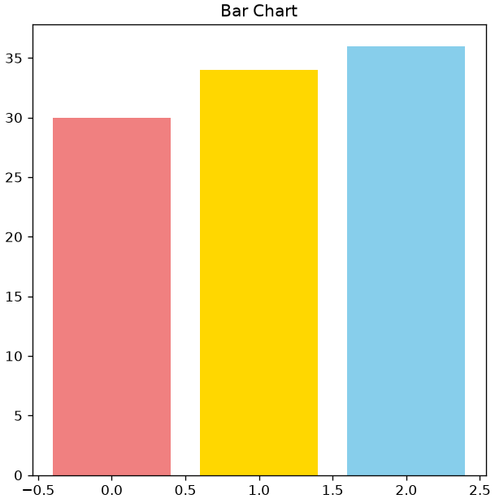
In short: pie charts should be used with extra care!
Empirical Cumulative Distribution Function (ECDF)
Relative frequencies work particularly well when there are few unique values. However, when the number of unique values grows, the discrete frequencies calculated for the values become very small and thus subject to noise (e.g., due to measurement errors).
Let’s now consider the sample of weights and its relative frequencies:
We note that we now have many more unique values (172) and that weights now have decimal values as well.
This suggests that, while heights were discretized—probably rounded when collected—weights were recorded with greater precision. As a result, the weight variable behaves more like a continuous numerical feature, whereas height appears more discretized or categorical in nature. This distinction influences how we visualize and model these variables.
The representation is affected by noise, whereby two very close values are treated as two distinct cases in probability calculations. We will see some ways to overcome this problem. One of them consists of calculating an Empirical Cumulative Distribution Function (ECDF). An ECDF calculates for a value x the sum of the relative frequencies of all values y less than or equal to x:
ECDF(x) = \sum_{a_j: a_j\leq x} f(a_j)
Where a_j are the unique values within the sample, while in general x\in \mathbb{R}.
It should be noted that the values of the ECDF are always increasing and the last value is equal to 1 (the sum of all relative frequencies).
An ECDF can be represented graphically by placing the x values on the x-axis and the ECDF(x) values on the y-axis. For example, the ECDF of the weights in our weights-heights dataset will be the following:
The definition of the ECDF tells us that, given a point with coordinates (x,y), the sum of the frequencies of elements less than or equal to x is equal to y. Alternatively, we can say that y\% of the elements have a value less than x.
Observing the graph above, we can say that:
Approximately 40\% of subjects have a weight less than \approx 33 pounds (about 66kg);
Approximately 80\% of subjects have a weight less than \approx 42 pounds (about 84Kg);
ECDFs are useful for graphically checking if two phenomena have similar distributions. We can, for example, use them to compare the weight distributions of men and women:
In general, the graph above tells us that men tend to be heavier than women.
Histograms
Another way to fix the noise problem is to group similar observations in the same “class”. In practice, we will define intervals, which we call “bins” and assign each element to its corresponding bin. While this can be done in a variety of ways, bins are often chosen to be equals. This can be done using the cut function of Pandas:
The visualization we obtain is an histogram, and can be obtained also as follows:
plt.figure(figsize=(12,6))_,edges,_=plt.hist(heights, width=1, bins=10) # We capture the "edges" of the binsplt.xticks(edges) # Set x-ticks to the edges of the bins for better readabilityplt.grid()plt.show()
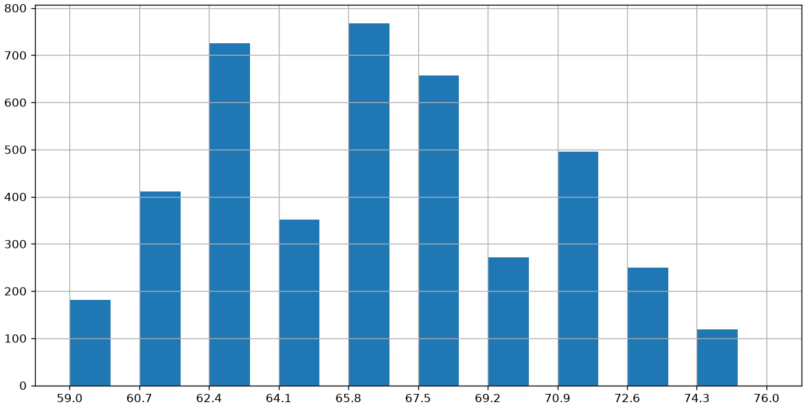
Each histogram “bin” covers a specific range. Common practice is to divide the data range, from minimum to maximum, into a certain number of bins of equal width.
Choosing the Number of Bins: Sturges and Rice
The number of bins can be specified arbitrarily or determined based on the graphical result you want to achieve. There are two heuristic criteria for finding starting values:
Sturges: \#bins=3.3\log(n)
Rice: \#bins=2\cdot n^{1/3}
Where n is the number of elements.
It should be noted that the number of bins can change the graphical result. Below are two examples obtained by calculating the number of bins with the two criteria considered:
import numpy as npbins_struges=int(3.3*np.log(len(weights)))bins_rice=int(2*len(weights)**(1/3))plt.figure(figsize=(12,4))plt.subplot(1,2,1)plt.title('Struges ({} bins)'.format(bins_struges))plt.hist(weights, bins=bins_struges)plt.grid()plt.subplot(1,2,2)plt.title('Rice ({} bins)'.format(bins_rice))plt.grid()plt.hist(weights, bins=bins_rice)plt.show()
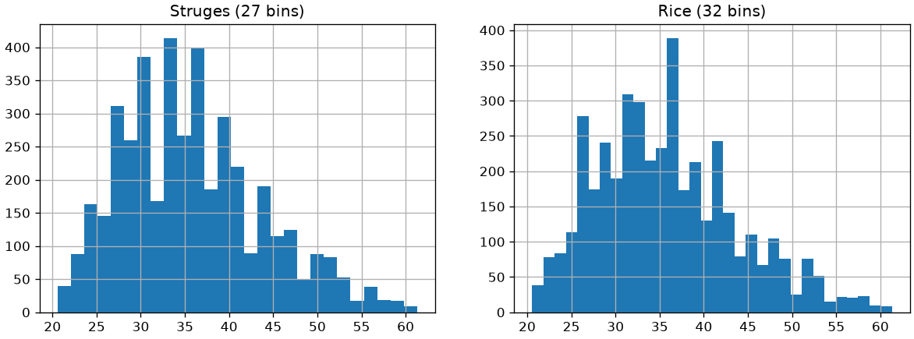
Alternatively, we can define arbitrary ranges for our bins. For example, considering the following limits for the bins [20,25,30,35,40,45,50,55,60,65], we would obtain the following histogram:
plt.figure(figsize=(12,6))_,edges,_=plt.hist(weights, bins=[20,25,30,35,40,45,50,55,60,65]) # construct a histogram with defined binsplt.xticks(edges)plt.grid()plt.show()
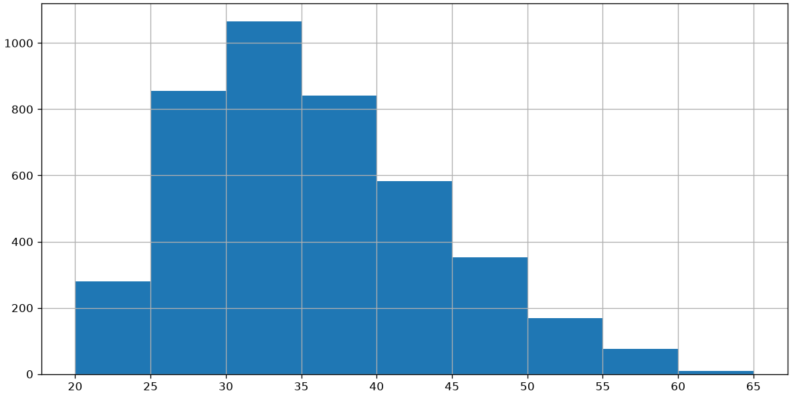
The histogram shown above reports the absolute frequencies for each bin and allows us to answer questions such as “how many subjects have a weight between 30 and 35 pounds”?
In particular cases, it is also possible to define histograms with bins of variable size. For example:
plt.figure(figsize=(12,6))_,edges,_=plt.hist(weights, bins=[20,30,35,40,45,50,51,52,55,60,65]) # construct a histogram with the defined binsplt.xticks(edges)plt.grid()plt.show()
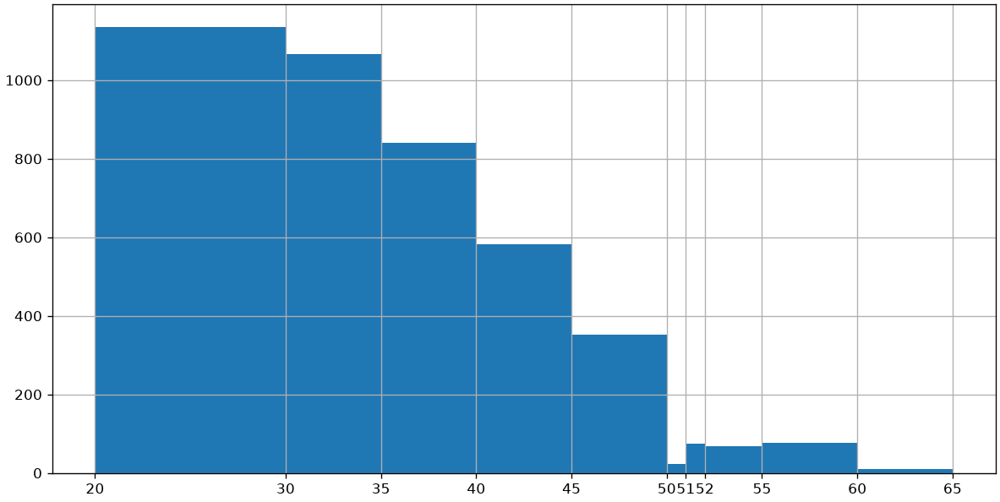
Comparing Samples Using Histograms
Histograms can be useful for comparing samples. The following graph compares the weights of men and women in our weights-heights sample:
One disadvantage of histograms is that they arbitrarily categorize continuous data using bins. The choice of bin intervals changes the final appearance of the histogram.
Density estimation attempts to solve this problem by obtaining a “continuous” version of the histogram. Instead of dividing the x-axis into bins, density estimation calculates a value for each point on the x-axis, thus obtaining a continuous representation.
We will look more closely at how density estimation is performed later in the course. In the one-dimensional case, it can be calculated as shown in the optional deep dive below. For now, we know that density estimation can be calculated with a dedicated function “density” that depends on a single bandwidth parameter (with a good default value being computed by the libraries), determining the “sensitivity to detail” of the density estimation.
Let’s compare the weight density estimation in our weight-height dataset with its corresponding histogram:
If in the case of histograms changing the number of bins changed the graphical result, here it is changing the bandwidth that changes the graphical result. The following graph shows several examples of density estimation with different bandwidth values:
We can also mix histograms and density plots as follows:
hw.groupby('sex')['weight'].plot.hist(width=3, alpha=0.9, figsize=(12,6), density=True) # density=True to normalize the histogramshw.groupby('sex')['weight'].plot.density()plt.legend()plt.grid()plt.show()
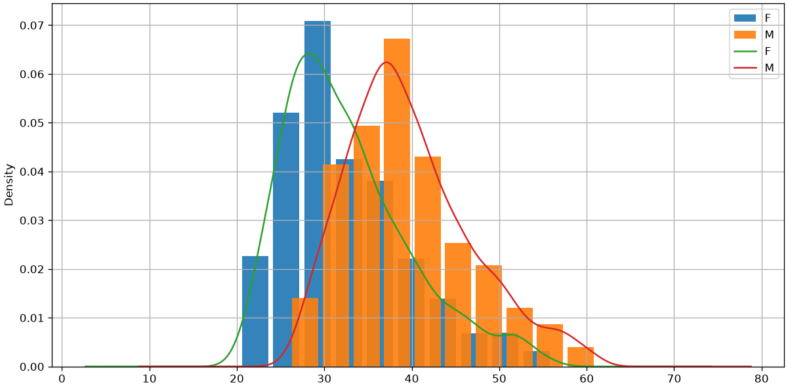
In this case, we had to specify “density=True” when computing the histogram to make sure that the ranges on the y axes of density estimation and histogram were the same. This leads us to a density histogram. We will see the theoretical details of this in a later lecture.
Summary Statistics
For now, we have seen graphical ways to represent the data. In practice, it can be useful to attach some numerical values to the data in order to summarize it.
Descriptive statistics deals with describing, representing, and summarizing a data sample pertaining to a population. The tools of descriptive statistics can be both numerical and graphical. The analyzed data can be described according to various aspects. Therefore, there are various objective “indicators”:
The sample contains NaN values, which will have to be handled appropriately.
Size
The size of a univariate sample \{x^{(i)}\}_i^N is given by the number of values it contains: |\{x^{(i)}\}_i^N| = N. The size of each column can also be different as there may be missing values, generally indicated by NA or NaN. In our case:
age.info()
<class 'pandas.core.series.Series'>
Index: 891 entries, 1 to 891
Series name: Age
Non-Null Count Dtype
-------------- -----
714 non-null float64
dtypes: float64(1)
memory usage: 13.9 KB
The summary above indicates that, although we have 891 values, only 714 of these are non-null. These are the “real” size of the sample.
Measures of central tendency
Central measures give an approximate idea of the order of magnitude of the sample values.
Mean
The mean of a sample is defined as the sum of its values divided by its size:
\overline X = \frac{1}{N}\sum_i^N x^{(i)}
The mean of our sample will be:
age.mean()
np.float64(29.69911764705882)
Note that the mean function will automatically ignore the missing data.
This statistic is very easy to interpret: the average age is about 30 years.
Let’s see where this descriptive statistic stands in a graphical representation of the density of the sample:
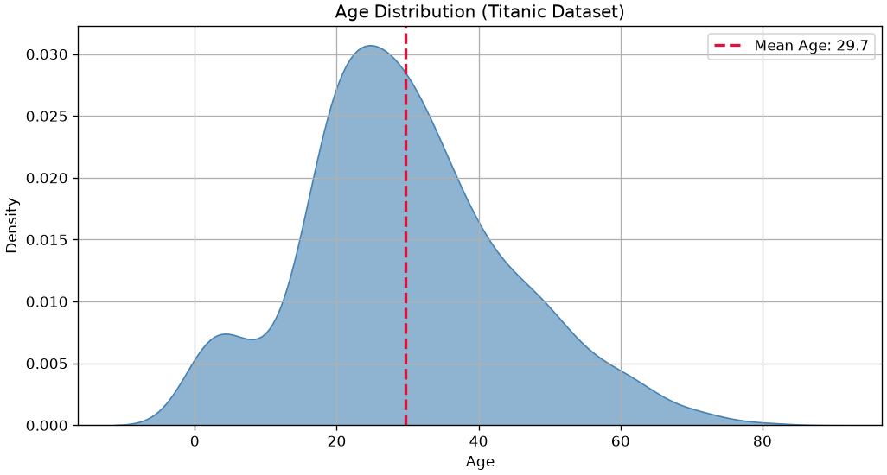
Median
When the elements of a sample can be ordered (for example, if they are numerical values), the median of a sample (or the median element) is the element that divides the ordered set of sample values into two equal parts.
The median element can be obtained by ordering the sample values and proceeding as follows:
If the number of elements is odd, take the central element. For example [1,2,\mathbf{2},3,5] \to 2.
If the number of elements is even, take the average of the two central ones. For example [1,2,\mathbf{2},\mathbf{3},3,5] \to \frac{2+3}{2} = 2.5.
In the case of our sample:
print("Median value:",age.median())
Median value: 28.0
From a formal point of view, if we have n observations x^{(1)}, \ldots, x^{(n)}, which can be ordered as x^{(i_i)},\ldots, x^{(i_n)}, the calculation of the median can be expressed as follows:
\tilde x_{0.5} = \begin{cases}
x^{(n+1)/2} & \text{if } n \textit{ is odd}\\
\frac{1}{2}(x^{(n/2)}+x^{(n/2+1)}) & \text{otherwise.}
\end{cases}
To be convinced of the above formulation, we can see two toy examples:
The median is the average between the two central elements 3 and 4.
Let’s see where this descriptive statistic stands in a graphical representation of the density of the sample:
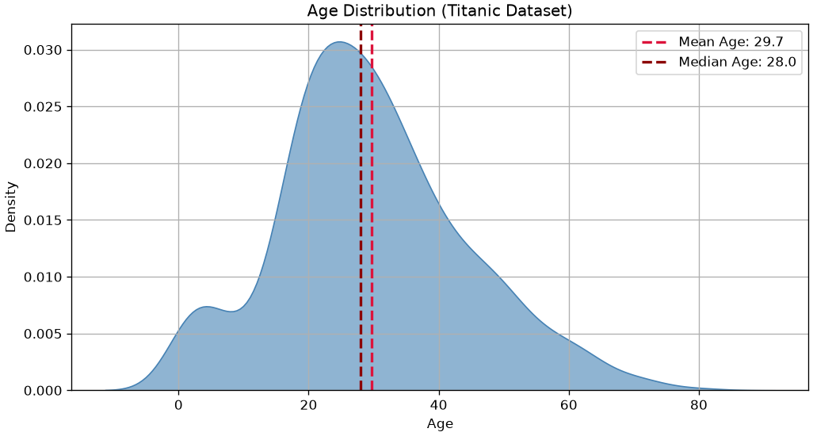
As we can see, depending on the density of the data, the two values are not always identical.
Quantiles, Percentiles, and Quartiles
Quantiles, percentiles, and quartiles generalize the concept of the median.
Quantiles
A quantile of order \alpha is a value q_\alpha that divides a sample into two parts with sizes proportional to \alpha and 1-\alpha. Values less than or equal to q_\alpha belong to the first part of the division, while values greater than q_\alpha belong to the second part.
For example, given the already ordered sample [1,2,3,3,4,5,6,6,7,8,8,9], a quantile q_{0.25} will divide the sample into two parts with sizes proportional to 0.25 and 1-0.25=0.75. In this case q_{0.25}=3 and the two parts will be [1,2,3,3] and [4,5,6,6,7,8,8,9].
In this case too, as with the median, averages of adjacent values are taken where appropriate.
Quantiles should be interpreted as follows:
If a quantile of order \alpha is equal to the number x, then it means that \alpha \times n elements have a value less than or equal to x, where n is the number of elements in the sample.
Order 0 Quantile (minimum): 0.42
Order 0.5 Quantile (median): 28.0
Order 1 Quantile (maximum): 80.0
Order 0.15 Quantile: 17.0
From the above data we deduce that:
50\% of the passengers are younger than 28.
15\% of the passengers are younger than 17.
Percentiles
Percentiles are simply quantiles expressed as a percentage. A quantile of order 0.25 is a percentile of order 25\%. In practice, we still use the quantile function to compute them:
age.quantile(25/100)
np.float64(20.125)
Quartiles
Quartiles are specific quantiles that divide the sample into four parts. In particular:
The quartile of order 0 is a quantile of order 0;
The quartile of order 1 is a quantile of order 1/4=0.25;
The quartile of order 2 is a quantile of order 2/4=0.5;
The quartile of order 3 is a quantile of order 3/4=0.75;
The quartile of order 4 is a quantile of order 4/4=1.
Also in this case, we use the quantile function:
print("Quartile of order 0 (minimum):", age.quantile(0/4))print("Quartile of order 1:", age.quantile(1/4))print("Quartile of order 2 (median):", age.quantile(2/4))print("Quartile of order 3:", age.quantile(3/4))print("Quartile of order 4 (maximum):", age.quantile(4/4))
Quartile of order 0 (minimum): 0.42
Quartile of order 1: 20.125
Quartile of order 2 (median): 28.0
Quartile of order 3: 38.0
Quartile of order 4 (maximum): 80.0
Let’s see this in graphical terms:
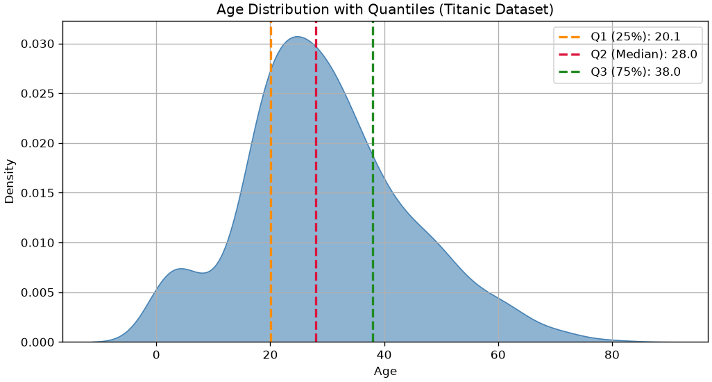
Mode
The mode of a sample is the value that appears most frequently within the data. It represents the most common observation. It can se computed as follows:
age.mode()
0 24.0
Name: Age, dtype: float64
In formal terms, the mode \overline x_M of a sample is given by:
In the output above, the first column represents the unique values a_j, while the second column represents the absolute frequencies n_j. Since the list is already sorted by counts, we can extract the maximum as follows:
print("Mode:\n",data.value_counts().index[0])
Mode:
2
The mode is 2 as this number repeats most times (it repeats 4 times).
In graphical terms:
import seaborn as snsimport matplotlib.pyplot as plt# Drop missing agesages = titanic['Age'].dropna()# Compute mode (may return multiple values, so we take the first)mode_age = ages.mode().iloc[0]# Plot densityplt.figure(figsize=(10,5))sns.kdeplot(ages, fill=True, color='steelblue', alpha=0.6)plt.axvline(mode_age, color='darkred', linestyle='--', linewidth=2, label=f'Mode Age: {mode_age:.1f}')# Customize plotplt.title('Age Distribution with Mode (Titanic Dataset)')plt.xlabel('Age')plt.ylabel('Density')plt.legend()plt.grid()plt.show()
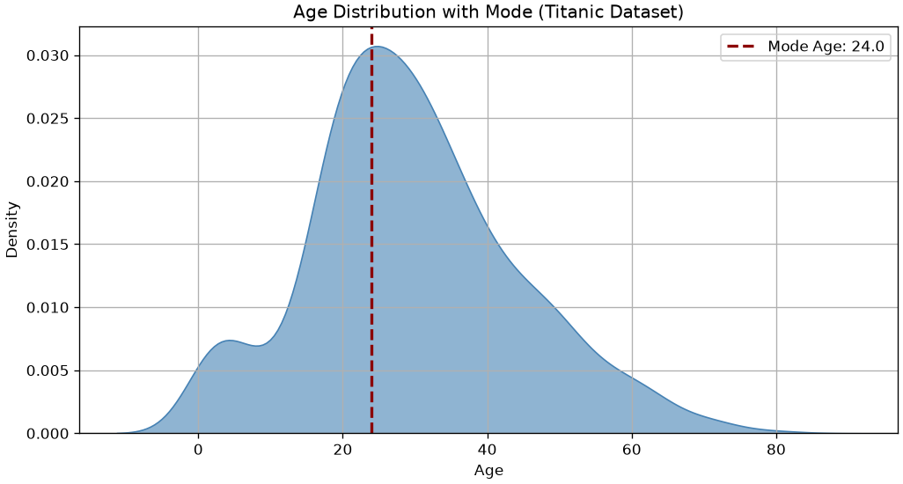
The mode is the “peak” of the density of the data as it represents the most common value.
Measures of Dispersion
Measures of dispersion serve to quantify to what extent the values of a distribution are “dispersed”, or “far from each other”.
Minimum, Maximum, and Range
Simple indices of dispersion are the minimum (min \{x^{(i)}\}_i^N), the maximum (max \{x^{(i)}\}_i^N), and the range (max \{x^{(i)}\}_i^N - min \{x^{(i)}\}_i^N). These are easily computed as follows:
We can see that there is some density before 0 because the density estimation function “interpolates” what may happen before the zero if we had data there. This is an artifacts of the continuous nature of this visualization.
Interquartile Range (IQR)
The range is not a very robust measure of dispersion, as it does not take into account the presence of any outliers. Consider, for example, the following “artificial” samples:
from matplotlib import pyplot as pltimport numpy as npimport pandas as pdsample1 = np.linspace(3,7,10)sample2 = sample1.copy()sample2[0]=-5# we replace two values with the outliers -5sample2[-1]=15# and 15df = pd.DataFrame({'s1':sample1,'s2':sample2})print(df)# df.plot.box()# plt.grid()# plt.show()print("Range sample 1:",df['s1'].max()-df['s1'].min())print("Range sample 2:",df['s2'].max()-df['s2'].min())
The samples are similar, but the presence of two outliers (-5 and 15) in the second sample makes the ranges very different (4 and 20).
A more expressive measure of dispersion is therefore the interquartile range (or interquartile distance), which is measured as the difference between the third and first quartiles:
q11,q13 = df['s1'].quantile([1/4,3/4])q21,q23 = df['s2'].quantile([1/4,3/4])print("The interquartile range of sample 1 is:",q13-q11)print("The interquartile range of sample 2 is:",q23-q21)
The interquartile range of sample 1 is: 2.0
The interquartile range of sample 2 is: 2.0
Let’s see how to compute the IQR in the case of the Age sample:
q1,q3 = age.quantile([1/4,3/4])print("The interquartile range of age is:",q3-q1)
The interquartile range of age is: 17.875
Graphically:
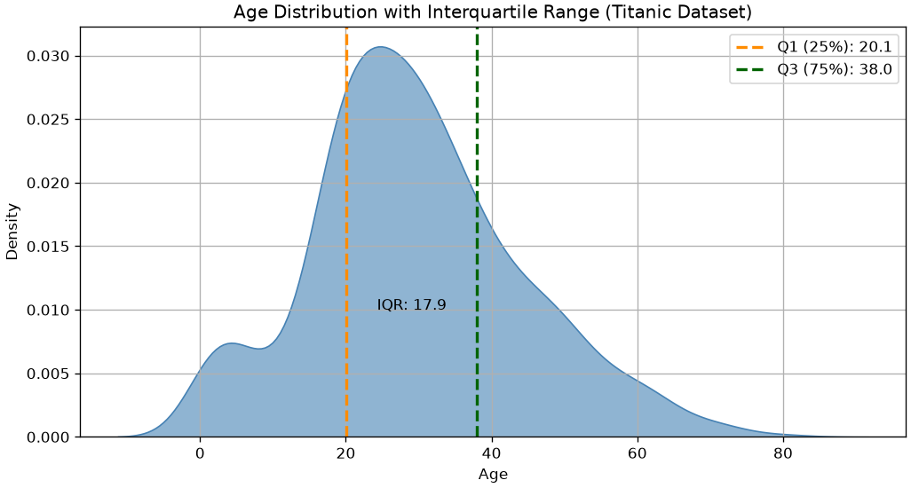
Variance and Standard Deviation
Variance (also known as mean squared deviation) provides an estimate of how much the observed data deviates from the mean. Variance calculates the mean of the squares of the deviations of the values from the mean, penalizing large deviations from the mean value (due to outliers) more heavily than small deviations:
It can be shown that, when computing variance from smaller samples, it can lead to biased estimates. Hence, it is very common to use the Sample variance with n-1 in the denominator:
We will see it better later in the course, but for now consider that:
The variance formula can be used when we have access to the whole population;
The sample variance formula should be used in all other cases;
When sample size is large enough, the two give very similar result (for large values of n: n-1 \approx n).
Here we use the symbol s instead of the symbol \sigma seen in the case of probability distributions, because s is a value “estimated” from the data and not “theoretical” as in the case of \sigma. It should be noted, however, that in practice, there is no universal convention, so in many cases \sigma is also used for estimated values.
We can attribute a geometric meaning to variance, as shown in the graph below:
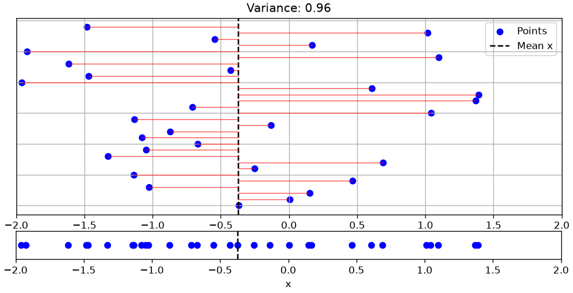
In the graph, the bottom plot shows a univariate sample \{x_i\}_i^N. The top plot shows the same sample “exploded” on the y-axis for visualization purposes. In the top plot, the black dashed line indicates the sample mean, while the red lines are the terms (x_i-\overline x) that appear in the variance formula. The variance calculates the average of the lengths of these segments.
The following graph shows a less “dispersed” sample:
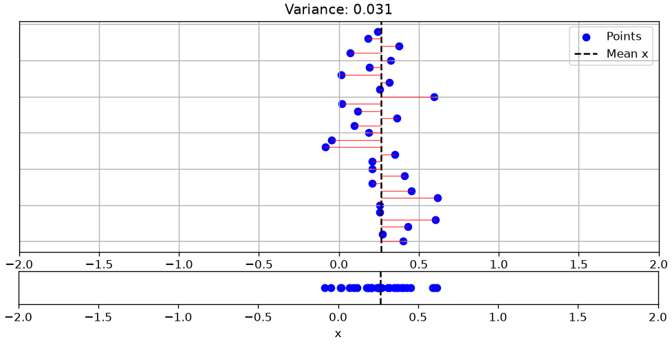
The variance of age will be:
age.var()
np.float64(211.01912474630802)
The dispersion indices seen so far (excluding variance) have the same unit of measurement as the input data. In the case of ages, the data are measured in years. It is therefore correct to say that minimum, maximum, range, interquartile range, and mean absolute deviation calculated on weights are measured in years.
The same does not apply to the variance, which will be measured in years squared. If we want to obtain a commensurable measure of dispersion, we can calculate the square root of the variance, thus obtaining the standard deviation (or root mean square deviation), which is defined as follows:
Let’s see how these measures of dispersion relate to distributions with different shapes. We will consider the ages of passengers in the three classes of the Titanic:
We can see a correspondence between the graphical forms of the distributions and the dispersion measures. Indeed, passengers in class 3 are “less dispersed” and “younger” than in the other classes.
Data Normalizations
The observed data dispersion indicators strongly depend on the nature of the data and their unit of measurement. For example, ages are measured in years, while weights are in Kg or pounds. Therefore, there are data normalization techniques that make data based on different units of measurement comparable to each other.
Normalization between 0 and 1
This normalization scales the data so that the minimum and maximum values are exactly equal to 0 and 1, using the following formula:
In many cases, it is useful to normalize data so that they have zero mean and unit standard deviation. This type of normalization is called “z-scoring” and is performed by subtracting the mean from the data and dividing by the standard deviation.
z_i = \frac{x_i-\overline x}{s_x}
where s_x is the standard deviation of the population to which X belongs. Note that zeta scores are dimensionless (i.e., they have no unit of measurement).
To understand the effect of this normalization, let’s observe the density estimates of the samples before and after normalization:
Let’s now look at some indicators that allow us to get an idea of certain aspects of the “shape” of data distribution.
Asymmetry (skewness)
Skewness is an indicator of the “imbalance” to the left (negative value) or to the right (positive value) of a data sample with respect to the central value. The formula for skewness is as follows:
Negative if the distribution is skewed to the left;
Positive if the distribution is skewed to the right;
Close to zero in the case of unskewed distributions.
We can compute the skewness as follows
age.skew()
np.float64(0.38910778230082704)
Let’s look at some examples of distributions and skewness:
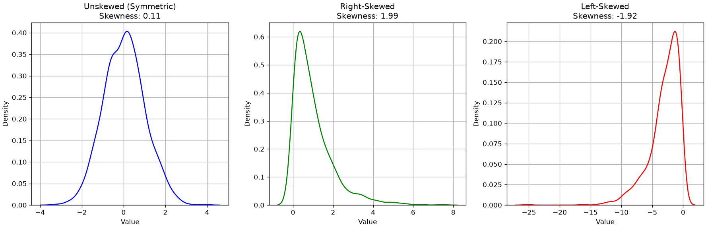
Kurtosis (kurtosis)
The kurtosis index measures the “thickness” of the tails of a density distribution. It is defined as follows:
K = \frac{1}{n} \sum_{i=1}^{n} \left(\frac{X_i - \bar{X}}{s}\right)^4 - 3
The index is interpreted as follows:
If it is greater than zero, the distribution is leptokurtic, i.e., more “peaked” than a Normal distribution;
If it is less than zero, the distribution is platykurtic, i.e., more “flat” than a Normal distribution;
If it is equal to zero, the distribution is mesokurtic, i.e., the tails are similar to those of a normal distribution.
We will see what a normal distribution is later in the course.
We can compute the kurtosis as follows:
age.kurtosis()
np.float64(0.17827415364210353)
Let’s look at some examples of Kurtosis values:
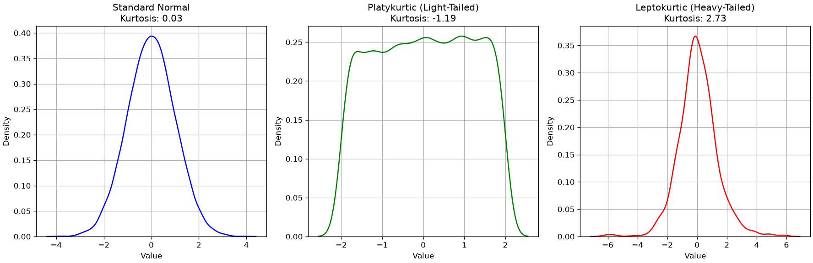
Statistical Summary
When we compute values like mean, median, mode, minimum, maximum, range, standard deviation, variance, and interquartile range, we’re building what is known as a statistical summary of a dataset. These measures help us understand the central tendency, spread, and shape of a distribution—whether it’s symmetric, skewed, concentrated, or dispersed.
In practice, we can obtain many of these summary statistics quickly using the .describe() method in pandas:
age.describe()
count 714.000000
mean 29.699118
std 14.526497
min 0.420000
25% 20.125000
50% 28.000000
75% 38.000000
max 80.000000
Name: Age, dtype: float64
This returns:
count: number of non-missing values
mean: average value
std: standard deviation
min and max: smallest and largest values
25%, 50%, 75%: the first quartile (Q1), median (Q2), and third quartile (Q3)
If you want to include other measures like mode or variance, you can compute them separately:
These tools are essential for both exploratory data analysis and communicating insights clearly—whether you’re comparing groups, detecting outliers, or preparing data for modeling.
Boxplots
Boxplots are a compact visualization method for representing certain descriptive characteristics of the data under analysis. In particular, given a sample, a boxplot can effectively represent the following quantities:
Median value;
First and third quartile;
Minimum and maximum (depending on the boxplot’s “version,” as discussed below).
A boxplot appears as follows:
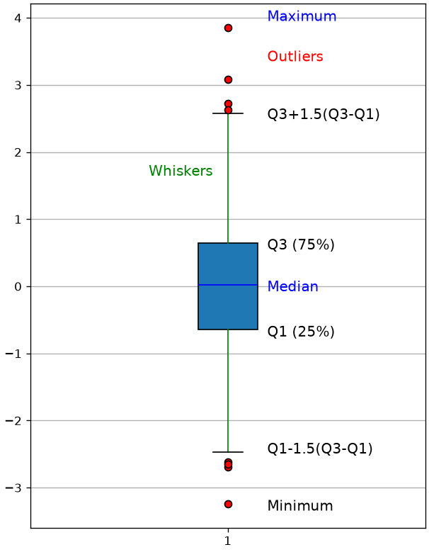
A boxplot is a graphical summary of a dataset that displays its distribution using a rectangular “box” and two “whiskers.” Specifically:
Bottom edge of the box: marks the first quartile (Q1), the 25th percentile of the data.
Top edge of the box: marks the third quartile (Q3), the 75th percentile.
Horizontal line inside the box: represents the median (Q2), the 50th percentile.
Lower whisker: extends to the smallest data point that is greater than or equal to
( Q1 - 1.5 (Q3 - Q1) ).
Upper whisker: extends to the largest data point that is less than or equal to
( Q3 + 1.5 (Q3 - Q1) ).
Individual points beyond the whiskers: represent outliers—values that fall outside the range defined by the whiskers.
To illustrate the usefulness of boxplots, we will consider the dataset of weights and heights seen previously:
hw
sex
height
weight
0
M
74
53.484771
1
M
70
38.056472
2
F
61
34.970812
3
M
68
35.999365
4
F
66
34.559390
...
...
...
...
4226
F
69
23.862436
4227
M
69
38.262182
4228
F
64
34.970812
4229
F
64
28.388071
4230
F
61
22.628172
4231 rows × 3 columns
Let’s choose the “weight” variable and show the statistical summary, that is, the list of all the descriptive statistics indicators discussed so far:
hw['weight'].describe()
count 4231.000000
mean 35.818062
std 7.987908
min 20.571066
25% 29.828045
50% 34.970812
75% 41.142132
max 61.301776
Name: weight, dtype: float64
The boxplot of the weights is computed as follows:
from matplotlib import pyplot as plthw['weight'].plot.box(figsize=(2,6))plt.grid()plt.show()
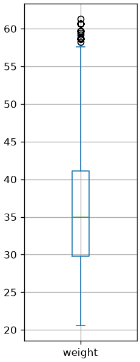
Boxplots can be useful to compare samples. For example, the following boxplots compare the distributions of weights between men and women:
From the graph above, we can note that weight has different distributions in males and females, with males overall weighing more, as one would expect.
Exercises
Exercise 1
Considering the Titanic dataset, show the bar charts of absolute and relative frequencies of the values in the Pclass column. Randomly choosing among the passengers, what is the probability that they embarked in second class?
Exercise 2
Considering the Titanic dataset, show the histogram of the ages of passengers embarked in first class. Use an appropriate criterion to choose the number of bins.
Exercise 3
Modify the plot from the previous exercise to construct a histogram that answers the question “if I randomly choose a passenger boarded in first class, what is the probability that their age is between 20 and 30 years?”
Exercise 4
Considering the Titanic dataset, compare the cumulative age distributions of passengers embarked in the various classes. Are the distributions similar? In which class are the youngest subjects embarked?
Exercise 5
Considering the Titanic dataset, show with a stacked bar plot the percentages of passengers belonging to the three classes separately for the two sexes. Are there any differences in the distribution?
Exercise 6
Considering the Titanic dataset, calculate for each variable the count, mean, standard deviation, minimum, maximum, median, first quartile, and third quartile. After calculating the requested values individually, use the describe method to obtain these values. Which variable is the most dispersed?
Exercise 7
Considering the Titanic dataset, for each of the three classes, calculate the mean and variance of passenger ages. In which class are the ages least dispersed? Which class contains the youngest individuals? Complete the analysis with bar charts.
References
Chapter 2 of: Heumann, Christian, and Michael Schomaker Shalabh. Introduction to statistics and data analysis. Springer International Publishing Switzerland, 2016.
Chapter 3 of: Heumann, Christian, and Michael Schomaker Shalabh. Introduction to statistics and data analysis. Springer International Publishing Switzerland, 2016.
Source Code
---title: "Describing and visualizing the data"stem: 02_describing_visualizingchapter: 2format: html: code-tools: true ipynb: default---::: {.callout-tip icon=false}## Chapter resources[Slides (PDF)](../files/slides/02_describing_visualizing.pdf){.btn .btn-sm .btn-primary}[Open in Colab](https://colab.research.google.com/github/antoninofurnari/fad-2627/blob/main/notes/02_describing_visualizing.ipynb){.btn .btn-sm .btn-outline-primary}[Download PDF](../files/chapters/02_describing_visualizing.pdf){.btn .btn-sm .btn-outline-primary .btn-chapter-pdf}[Practice quiz](../quiz.html?bank=02){.btn .btn-sm .btn-outline-primary}:::```{python}#| echo: false# Datasets are served by the site itself, so the same code runs here, on a# local clone and on Colab. See site/data/MANIFEST.yml.from pathlib import PathDATA ="../data/"if Path("../data").is_dir() else"https://antoninofurnari.github.io/fad-2627/data/"```We have seen how to access the data and perform some basic manipulations. In practice, datasets are often large enough to make it difficult to grasp their structure or patterns by simply printing rows or scanning tables. This is where **descriptive statistics** and **visualization techniques** become essential tools.Describing and visualizing the data helps us:- Gather insights on the dataset- Understand the main characteristics of each variable- Detect missing or anomalous values- Identify relationships between variables- Spot trends or clusters of data which are similar- Guide the choice of pre-processing and further modelingTo make some example, we will consider a simple dataset where weights (in pounds), heights (in inches), and sex of various subjects. The dataset will look like this:```{python}import pandas as pdhw=pd.read_csv(DATA +"height_weight_pounds.csv")hw.info()hw.head()```Since we are inspecting the dataset, it is worth to answer these questions:- How many observations do we have?- How many variables?- What are the measuring scales of each variable?- Which variables are discrete? Which continuous? Which numerical?- Are there missing values?We will begin by focusing on the univariate sample of heights:```{python}heights = hw['height']heights```## Absolute and Relative Frequencies### Absolute FrequenciesA first way to describe data is to calculate the number of times each value appears. These are called "absolute frequencies". Absolute frequencies are generally calculated for discrete variables where observations take a finite number of values.Let$$a_1, a_2, \ldots, a_n$$be the values that the variable under consideration can take.The absolute frequencies $n_i$ are defined as the number of times that $a_i$ appears in the sample. Note that:$$\sum_i n_i = N$$Where $N$ is the total number of elements in the sample.We can compute unique values $a_j$ as follows:```{python}heights.unique()```The absolute frequencies can be computed as follows:```{python}heights.value_counts()```Note that this will sort the values by frequency. We can sort them by value as follows:```{python}heights.value_counts().sort_index()```#### Bar Chart of Absolute FrequenciesThe data frequencies can be graphically represented using a bar chart that places the unique value ($a_i$) on the x-axis and represents the absolute frequency $n_i$ as the height of the bar.In our example:```{python}from matplotlib import pyplot as plthw['height'].value_counts().sort_index().plot.bar(figsize=(18,6))plt.grid()plt.show()```The graph above tells us something about the number of occurrences of a given value and also gives us an idea of which values are more or less frequent. We see that the data follows a "bell" shape. We will often find this type of shape and will discuss it further later.### Relative FrequenciesAbsolute frequencies allow us to get a more precise idea of how data are distributed, regardless of the size of our sample. For example, we know that the sample contains more individuals with a height of $167.64\ cm$ than individuals with a height of $193.04\ cm$. However, this representation is linked to the total number of elements contained in the sample. For example, a similarly distributed sample, but with more observations, will result in larger absolute frequencies. We can obtain a representation independent of the sample size by analyzing relative frequencies, defined as follows:$$f_j = f(a_j) = \frac{n_j}{N}, j=1,2,\ldots,k$$Note that, given the definition, we will have:$$ n_j \leq n \Rightarrow f_j \leq 1\ \forall j $$$$ \sum_j f_j = \sum_j \frac{n_j}{N} = \frac{1}{N}\sum_j n_j = \frac{N}{N} = 1$$We can obtain relative frequencies still with value_counts, but this time we will pass the argument `normalize=True`:```{python}heights.value_counts(normalize=True).sort_index()```#### Bar Chart of Relative FrequenciesBy plotting the relative frequencies using a bar chart, we obtain a graph very similar to the one showing absolute frequencies, but with a different scale on the y-axis.```{python}(hw['height'].value_counts(normalize=True).sort_index()).plot.bar(figsize=(18,6))plt.grid()plt.show()```Relative frequency bar charts are useful for comparing different samples. For example, we can consider the heights of men and women in the weights-and-heights dataset:```{python}pmf_height_m = hw[hw['sex']=='M']['height'].value_counts(normalize=True).sort_index()pmf_height_f = hw[hw['sex']=='F']['height'].value_counts(normalize=True).sort_index()plt.figure(figsize=(18,6))# We add and subtract 0.2 from the indices to "shift" the bars and make them# visible when overlapping. We also set alpha=0.9 to make the bars# partially transparent.plt.bar(pmf_height_m.index+0.2, pmf_height_m.values, width=0.5, alpha=0.9)plt.bar(pmf_height_f.index-0.2, pmf_height_f.values, width=0.5, alpha=0.9)plt.xticks(hw['height'].unique(), rotation='vertical')plt.legend(['M','F']) # Display a legendplt.grid()plt.show()```From the comparison above, we can already make some qualitative observations about the two samples. In particular, we notice (unsurprisingly) that men are generally taller than women. This doesn’t mean that there aren’t men who are shorter than some women, or vice versa, but such cases are reasonably less frequent.#### Barplots and Stacked BarplotsWe can also used barplots and stacked barplots to count the number of elements in a given class. For instance, a barplot counting the number of subjects in the "male" or "female" class looks like this:```{python}import matplotlib.pyplot as plt# Calculate proportionssex_counts = hw['sex'].value_counts()# Create bar plotsex_counts.plot.bar(color=['steelblue', 'salmon'])# Customize plotplt.title('Proportion of Males and Females')plt.ylabel('Proportion')plt.xticks(rotation=0)plt.grid(axis='y', linestyle='--', alpha=0.5)plt.show()```We can obtain the normalized version by passing normalize=True to value_counts:```{python}import matplotlib.pyplot as plt# Calculate proportionssex_counts = hw['sex'].value_counts(normalize=True)# Create bar plotsex_counts.plot.bar(color=['steelblue', 'salmon'])# Customize plotplt.title('Absolute Frequencies of Males and Females')plt.ylabel('Absolute Frequency')plt.xticks(rotation=0)plt.ylim(0, 1)plt.grid(axis='y', linestyle='--', alpha=0.5)plt.show()```When numbers sum to one, another popular visualization is that of the stacked plot:```{python}import matplotlib.pyplot as plt# Compute proportions grouped by a single dummy categorysex_props = hw.groupby(lambda _: 'All')['sex'].value_counts(normalize=True).unstack()# Plot as stacked barsex_props.plot(kind='bar', stacked=True, color=['steelblue', 'salmon'])# Customize plotplt.title('Stacked Bar: Proportion of Males and Females')plt.ylabel('Proportion')plt.xticks(rotation=0)plt.ylim(0, 1)plt.legend(title='Sex', loc='upper center', bbox_to_anchor=(0.5, -0.15), ncol=2)plt.grid(axis='y', linestyle='--', alpha=0.5)plt.show()```#### Pie ChartsAs an alternative to bar charts, relative frequencies can also be displayed using pie charts.In the case of heights:```{python}heights.value_counts(normalize=True).plot.pie()plt.show()```Pie charts works better when we have fewer elements. For instance, let's say we want to show the percentage of males and females in our dataset:```{python}hw['sex'].value_counts(normalize=True).plot.pie(autopct='%1.1f%%', labels=['Male', 'Female'])plt.title('Proportion of Males and Females')plt.ylabel('')plt.show()```While pie charts can be intuitive when there is no specific ordering of the elements we want to show, they often introduce more problems than other chart types. In particular, it's difficult for the human eye to accurately compare angles or assess relative sizes—especially when slices are similar in proportion or not arranged consistently. This can lead to misinterpretation or visual clutter, making bar charts or other alternatives generally more effective for comparing categories.An illustrative example is below:```{python}import matplotlib.pyplot as plt# Sample data: three categories with similar proportionssizes = [30, 34, 36]labels = ['Category A', 'Category B', 'Category C']colors = ['lightcoral', 'gold', 'skyblue']fig, axs = plt.subplots(1, 2, figsize=(12,6))# Pie chart without labelsaxs[0].pie(sizes, colors=colors)axs[0].set_title('Pie Chart Without Labels')# Pie chart with labelsaxs[1].pie(sizes, labels=labels, colors=colors, autopct='%1.1f%%')axs[1].set_title('Pie Chart With Labels')plt.suptitle('Same Data, Different Perception')plt.show()```The figure shows the same plot with and without labels. Without labels, even significant differences as $4%$ are not easy to spot.Compare the pie chart above with the bar chart below. Where is it easier to spot differences, even without labels?```{python}import matplotlib.pyplot as pltfig, ax = plt.subplots(figsize=(6,6))ax.bar(range(len(sizes)), sizes, color=colors)ax.set_title('Bar Chart')plt.show()```In short: pie charts should be used with extra care!## Empirical Cumulative Distribution Function (ECDF)Relative frequencies work particularly well when there are few unique values. However, when the number of unique values grows, the discrete frequencies calculated for the values become very small and thus subject to noise (e.g., due to measurement errors).Let's now consider the sample of weights and its relative frequencies:```{python}weights = hw['weight']weights.value_counts(normalize=True).sort_index()```We note that we now have many more unique values (172) and that weights now have decimal values as well.This suggests that, while heights were discretized—probably rounded when collected—weights were recorded with greater precision. As a result, the weight variable behaves more like a continuous numerical feature, whereas height appears more discretized or categorical in nature. This distinction influences how we visualize and model these variables.Let's see the plot of absolute frequencies:```{python}weights.value_counts().sort_index().plot.bar(figsize=(18,6))plt.grid()```Not very easy to read, right?The representation is affected by noise, whereby two very close values are treated as two distinct cases in probability calculations. We will see some ways to overcome this problem. One of them consists of calculating an **Empirical Cumulative Distribution Function (ECDF)**. An **ECDF** calculates for a value $x$ the sum of the relative frequencies of all values $y$ less than or equal to $x$:$$ECDF(x) = \sum_{a_j: a_j\leq x} f(a_j)$$Where $a_j$ are the unique values within the sample, while in general $x\in \mathbb{R}$.Consider a simple dataset of numerical values:```{python}a = pd.Series([1, 5, 2, 6, 5, 4, 3, 5, 4, 2, 4, 5, 6, 4, 4, 3])a```The relative frequencies will be as follows:```{python}a.value_counts(normalize=True).sort_index()```The ECDF calculated on the unique values will be the following:```{python}a.value_counts(normalize=True).sort_index().cumsum()```It should be noted that the values of the ECDF are always increasing and the last value is equal to 1 (the sum of all relative frequencies).An ECDF can be represented graphically by placing the $x$ values on the x-axis and the $ECDF(x)$ values on the y-axis. For example, the ECDF of the weights in our weights-heights dataset will be the following:```{python}hw['weight'].value_counts(normalize=True).sort_index().cumsum().plot(figsize=(12,8))plt.grid()```The definition of the ECDF tells us that, given a point with coordinates $(x,y)$, the sum of the frequencies of elements less than or equal to $x$ is equal to $y$. Alternatively, we can say that $y\%$ of the elements have a value less than $x$.Observing the graph above, we can say that:* Approximately $40\%$ of subjects have a weight less than $\approx 33$ pounds (about $66kg$);* Approximately $80\%$ of subjects have a weight less than $\approx 42$ pounds (about $84Kg$);ECDFs are useful for graphically checking if two phenomena have similar distributions. We can, for example, use them to compare the weight distributions of men and women:```{python}ecdf_weight_m = hw[hw['sex']=='M']['weight'].value_counts(normalize=True).sort_index().cumsum()ecdf_weight_f = hw[hw['sex']=='F']['weight'].value_counts(normalize=True).sort_index().cumsum()plt.figure(figsize=(12,8))plt.plot(ecdf_weight_m.index, ecdf_weight_m.values)plt.plot(ecdf_weight_f.index, ecdf_weight_f.values)plt.legend(['M','F'])plt.grid()plt.show()```Observing the graph above, we can say that:* Approximately $40\%$ of men weigh less than $80Kg$;* Approximately $40\%$ of women weigh less than $60Kg$;* $100\%$ of men weigh less than $140Kg$;* $100\%$ of women weigh less than $130Kg$.In general, the graph above tells us that men tend to be heavier than women.## HistogramsAnother way to fix the noise problem is to group similar observations in the same "class". In practice, we will define intervals, which we call "bins" and assign each element to its corresponding bin. While this can be done in a variety of ways, bins are often chosen to be equals. This can be done using the cut function of Pandas:```{python}heights_quantized = pd.cut(heights, bins=10)heights_quantized```Let's visualize absolute frequencies of this binned version of the data:```{python}heights_quantized.value_counts().sort_index().plot.bar(figsize=(18,6))plt.grid()plt.show()```The visualization we obtain is an histogram, and can be obtained also as follows:```{python}plt.figure(figsize=(12,6))_,edges,_=plt.hist(heights, width=1, bins=10) # We capture the "edges" of the binsplt.xticks(edges) # Set x-ticks to the edges of the bins for better readabilityplt.grid()plt.show()```Each histogram "bin" covers a specific range. Common practice is to divide the data range, from minimum to maximum, into a certain number of bins of equal width.#### Choosing the Number of Bins: Sturges and RiceThe number of bins can be specified arbitrarily or determined based on the graphical result you want to achieve. There are two heuristic criteria for finding starting values:* Sturges: $\#bins=3.3\log(n)$* Rice: $\#bins=2\cdot n^{1/3}$Where $n$ is the number of elements.It should be noted that the number of bins can change the graphical result. Below are two examples obtained by calculating the number of bins with the two criteria considered:```{python}import numpy as npbins_struges=int(3.3*np.log(len(weights)))bins_rice=int(2*len(weights)**(1/3))plt.figure(figsize=(12,4))plt.subplot(1,2,1)plt.title('Struges ({} bins)'.format(bins_struges))plt.hist(weights, bins=bins_struges)plt.grid()plt.subplot(1,2,2)plt.title('Rice ({} bins)'.format(bins_rice))plt.grid()plt.hist(weights, bins=bins_rice)plt.show()```Alternatively, we can define arbitrary ranges for our bins. For example, considering the following limits for the bins `[20,25,30,35,40,45,50,55,60,65]`, we would obtain the following histogram:```{python}plt.figure(figsize=(12,6))_,edges,_=plt.hist(weights, bins=[20,25,30,35,40,45,50,55,60,65]) # construct a histogram with defined binsplt.xticks(edges)plt.grid()plt.show()```The histogram shown above reports the absolute frequencies for each bin and allows us to answer questions such as "how many subjects have a weight between $30$ and $35$ pounds"?In particular cases, it is also possible to define histograms with bins of variable size. For example:```{python}plt.figure(figsize=(12,6))_,edges,_=plt.hist(weights, bins=[20,30,35,40,45,50,51,52,55,60,65]) # construct a histogram with the defined binsplt.xticks(edges)plt.grid()plt.show()```### Comparing Samples Using HistogramsHistograms can be useful for comparing samples. The following graph compares the weights of men and women in our weights-heights sample:```{python}plt.figure(figsize=(12,6))plt.hist(hw[hw['sex']=='F']['weight'], alpha=0.9, width=3)plt.hist(hw[hw['sex']=='M']['weight'], alpha=0.9, width=3)plt.legend(['F','M'])plt.grid()plt.show()```Note that we can obtain a similar results directly from Pandas using the "groupby" function:```{python}hw.groupby('sex')['weight'].plot.hist(width=3, alpha=0.9, figsize=(12,6))plt.legend()plt.grid()plt.show()```### Density EstimationOne disadvantage of histograms is that they arbitrarily categorize continuous data using bins. The choice of bin intervals changes the final appearance of the histogram.Density estimation attempts to solve this problem by obtaining a "continuous" version of the histogram. Instead of dividing the $x$-axis into bins, density estimation calculates a value for each point on the $x$-axis, thus obtaining a continuous representation.We will look more closely at how density estimation is performed later in the course. In the one-dimensional case, it can be calculated as shown in the optional deep dive below. For now, we know that density estimation can be calculated with a dedicated function "density" that depends on a single **bandwidth** parameter (with a good default value being computed by the libraries), determining the "sensitivity to detail" of the density estimation.Let's compare the weight density estimation in our weight-height dataset with its corresponding histogram:```{python}hw['weight'].plot.density(figsize=(12,6))plt.hist(hw['weight'], density=True)plt.grid()plt.show()```If in the case of histograms changing the number of bins changed the graphical result, here it is changing the bandwidth that changes the graphical result. The following graph shows several examples of density estimation with different bandwidth values:```{python}fig, ax = plt.subplots()hw['weight'].plot.density(figsize=(12,6), bw_method=0.05)hw['weight'].plot.density(figsize=(12,6), bw_method=0.1)hw['weight'].plot.density(figsize=(12,6), bw_method=0.2)hw['weight'].plot.density(figsize=(12,6), bw_method=0.5)hw['weight'].plot.density(figsize=(12,6), bw_method=0.8)plt.hist(hw['weight'], density=True)ax.legend(['h=0.05','h=0.1','h=0.2','h=0.3','h=0.4','histogram'])plt.grid()plt.show()```We can compare two samples using density estimations in Pandas very easily as follows:```{python}hw.groupby('sex')['weight'].plot.density()plt.legend()plt.grid()plt.show()```We can also mix histograms and density plots as follows:```{python}hw.groupby('sex')['weight'].plot.hist(width=3, alpha=0.9, figsize=(12,6), density=True) # density=True to normalize the histogramshw.groupby('sex')['weight'].plot.density()plt.legend()plt.grid()plt.show()```In this case, we had to specify "density=True" when computing the histogram to make sure that the ranges on the y axes of density estimation and histogram were the same. This leads us to a **density histogram**. We will see the theoretical details of this in a later lecture.## Summary StatisticsFor now, we have seen graphical ways to represent the data. In practice, it can be useful to attach some numerical values to the data in order to summarize it.**Descriptive statistics** deals with describing, representing, and summarizing a data sample pertaining to a population. The tools of descriptive statistics can be both numerical and graphical. The analyzed data can be described according to various aspects. Therefore, there are various objective "indicators": * **sample size**; * **central indicators**: mean, median, mode; * **Dispersion indicators**: extremes, range, quantiles, percentiles, quartiles, interquartile range, variance;We will investigate these tools on the `Titanic` dataset. Let's load it:```{python}import pandas as pdtitanic = pd.read_csv(DATA +"titanic.csv", index_col='PassengerId')titanic.head()```We will start by focusing on the **univariate** sample of ages:```{python}age = titanic['Age']age```The sample contains `NaN` values, which will have to be handled appropriately.## SizeThe size of a univariate sample $\{x^{(i)}\}_i^N$ is given by the number of values it contains: $|\{x^{(i)}\}_i^N| = N$. The size of each column can also be different as there may be missing values, generally indicated by `NA` or `NaN`. In our case:```{python}age.info()```The summary above indicates that, although we have $891$ values, only $714$ of these are non-null. These are the "real" size of the sample.## Measures of central tendencyCentral measures give an approximate idea of the order of magnitude of the sample values.### MeanThe mean of a sample is defined as the sum of its values divided by its size:$$\overline X = \frac{1}{N}\sum_i^N x^{(i)}$$The mean of our sample will be:```{python}age.mean()```Note that the mean function will automatically ignore the missing data.This statistic is very easy to interpret: the average age is about 30 years.Let's see where this descriptive statistic stands in a graphical representation of the density of the sample:```{python}#| echo: falseimport seaborn as snsimport matplotlib.pyplot as plt# Drop missing agesages = titanic['Age'].dropna()# Compute meanmean_age = ages.mean()# Plot densityplt.figure(figsize=(10,5))sns.kdeplot(ages, fill=True, color='steelblue', alpha=0.6)plt.axvline(mean_age, color='crimson', linestyle='--', linewidth=2, label=f'Mean Age: {mean_age:.1f}')# Customize plotplt.title('Age Distribution (Titanic Dataset)')plt.xlabel('Age')plt.ylabel('Density')plt.legend()plt.grid()plt.show()```### MedianWhen the elements of a sample can be ordered (for example, if they are numerical values), the median of a sample (or the median element) is the element that divides the ordered set of sample values into two equal parts.The median element can be obtained by ordering the sample values and proceeding as follows:* If the number of elements is odd, take the central element. For example $[1,2,\mathbf{2},3,5] \to 2$.* If the number of elements is even, take the average of the two central ones. For example $[1,2,\mathbf{2},\mathbf{3},3,5] \to \frac{2+3}{2} = 2.5$.In the case of our sample:```{python}print("Median value:",age.median())```From a formal point of view, if we have $n$ observations $x^{(1)}, \ldots, x^{(n)}$, which can be ordered as $x^{(i_i)},\ldots, x^{(i_n)}$, the calculation of the median can be expressed as follows:$$\tilde x_{0.5} = \begin{cases}x^{(n+1)/2} & \text{if } n \textit{ is odd}\\ \frac{1}{2}(x^{(n/2)}+x^{(n/2+1)}) & \text{otherwise.}\end{cases}$$To be convinced of the above formulation, we can see two toy examples:```{python}odd_sample = pd.Series([1,2,3,4,100])print(odd_sample.sort_values())odd_sample.median()```The median is the central element 3.```{python}even_sample = pd.Series([1,2,3,4,5,100])print(even_sample.sort_values())even_sample.median()```The median is the average between the two central elements 3 and 4.Let's see where this descriptive statistic stands in a graphical representation of the density of the sample:```{python}#| echo: falseimport seaborn as snsimport matplotlib.pyplot as plt# Drop missing agesages = titanic['Age'].dropna()# Compute medianmedian_age = ages.median()mean_age = ages.mean()# Plot densityplt.figure(figsize=(10,5))sns.kdeplot(ages, fill=True, color='steelblue', alpha=0.6)plt.axvline(mean_age, color='crimson', linestyle='--', linewidth=2, label=f'Mean Age: {mean_age:.1f}')plt.axvline(median_age, color='darkred', linestyle='--', linewidth=2, label=f'Median Age: {median_age:.1f}')# Customize plotplt.title('Age Distribution (Titanic Dataset)')plt.xlabel('Age')plt.ylabel('Density')plt.legend()plt.grid()plt.show()```As we can see, depending on the density of the data, the two values are not always identical.### Quantiles, Percentiles, and QuartilesQuantiles, percentiles, and quartiles generalize the concept of the median.#### QuantilesA quantile of order $\alpha$ is a value $q_\alpha$ that divides a sample into two parts with sizes proportional to $\alpha$ and $1-\alpha$. Values less than or equal to $q_\alpha$ belong to the first part of the division, while values greater than $q_\alpha$ belong to the second part.For example, given the already ordered sample `[1,2,3,3,4,5,6,6,7,8,8,9]`, a quantile $q_{0.25}$ will divide the sample into two parts with sizes proportional to $0.25$ and $1-0.25=0.75$. In this case $q_{0.25}=3$ and the two parts will be `[1,2,3,3]` and `[4,5,6,6,7,8,8,9]`.In this case too, as with the median, averages of adjacent values are taken where appropriate.Quantiles should be interpreted as follows:> If a quantile of order $\alpha$ is equal to the number $x$, then it means that $\alpha \times n$ elements have a value less than or equal to $x$, where $n$ is the number of elements in the sample.It should be noted that:* The minimum is a quantile of order 0;* The maximum is a quantile of order 1;* The median is a quantile of order 0.5.Let's see some examples on our sample:```{python}print("Order 0 Quantile (minimum):", age.quantile(0))print("Order 0.5 Quantile (median):", age.quantile(0.5))print("Order 1 Quantile (maximum):", age.quantile(1))print("Order 0.15 Quantile:", age.quantile(0.15))```From the above data we deduce that:* $50\%$ of the passengers are younger than 28.* $15\%$ of the passengers are younger than 17.#### PercentilesPercentiles are simply quantiles expressed as a percentage. A quantile of order $0.25$ is a percentile of order $25\%$. In practice, we still use the quantile function to compute them:```{python}age.quantile(25/100)```#### QuartilesQuartiles are specific quantiles that divide the sample into four parts. In particular:* The quartile of order 0 is a quantile of order 0;* The quartile of order 1 is a quantile of order $1/4=0.25$;* The quartile of order 2 is a quantile of order $2/4=0.5$;* The quartile of order 3 is a quantile of order $3/4=0.75$;* The quartile of order 4 is a quantile of order $4/4=1$.Also in this case, we use the quantile function:```{python}print("Quartile of order 0 (minimum):", age.quantile(0/4))print("Quartile of order 1:", age.quantile(1/4))print("Quartile of order 2 (median):", age.quantile(2/4))print("Quartile of order 3:", age.quantile(3/4))print("Quartile of order 4 (maximum):", age.quantile(4/4))```Let's see this in graphical terms:```{python}#| echo: falseimport seaborn as snsimport matplotlib.pyplot as plt# Drop missing agesages = titanic['Age'].dropna()# Compute quantilesq1 = ages.quantile(0.25)q2 = ages.median() # same as 0.5q3 = ages.quantile(0.75)# Plot densityplt.figure(figsize=(10,5))sns.kdeplot(ages, fill=True, color='steelblue', alpha=0.6)# Overlay quantile linesplt.axvline(q1, color='darkorange', linestyle='--', linewidth=2, label=f'Q1 (25%): {q1:.1f}')plt.axvline(q2, color='crimson', linestyle='--', linewidth=2, label=f'Q2 (Median): {q2:.1f}')plt.axvline(q3, color='forestgreen', linestyle='--', linewidth=2, label=f'Q3 (75%): {q3:.1f}')# Customize plotplt.title('Age Distribution with Quantiles (Titanic Dataset)')plt.xlabel('Age')plt.ylabel('Density')plt.legend()plt.grid()plt.show()```### ModeThe **mode** of a sample is the value that appears **most frequently** within the data. It represents the most common observation. It can se computed as follows:```{python}age.mode()```In formal terms, the mode $\overline x_M$ of a sample is given by:$$\overline x_M = a_j \Leftrightarrow n_j = \max\{n_1,\ldots,n_k\}$$Where:- $a_j$ are the unique values of the sample (values without repetition) - $n_j$ are their respective absolute frequencies (how many times a value repeats)Let's see this with a toy example:Let's see how to compute it manually, with a toy example:```{python}data=pd.Series([1,2,3,4,2,5,4,2,6,5,8,4,3,2,3])data```The unique values $a_j$ with the respective absolute frequencies $n_j$ (counts) are computed as:```{python}print(data.value_counts())```In the output above, the first column represents the unique values $a_j$, while the second column represents the absolute frequencies $n_j$. Since the list is already sorted by counts, we can extract the maximum as follows:```{python}print("Mode:\n",data.value_counts().index[0])```The mode is $2$ as this number repeats most times (it repeats $4$ times).In graphical terms:```{python}import seaborn as snsimport matplotlib.pyplot as plt# Drop missing agesages = titanic['Age'].dropna()# Compute mode (may return multiple values, so we take the first)mode_age = ages.mode().iloc[0]# Plot densityplt.figure(figsize=(10,5))sns.kdeplot(ages, fill=True, color='steelblue', alpha=0.6)plt.axvline(mode_age, color='darkred', linestyle='--', linewidth=2, label=f'Mode Age: {mode_age:.1f}')# Customize plotplt.title('Age Distribution with Mode (Titanic Dataset)')plt.xlabel('Age')plt.ylabel('Density')plt.legend()plt.grid()plt.show()```The mode is the "peak" of the density of the data as it represents the most common value.## Measures of DispersionMeasures of dispersion serve to quantify to what extent the values of a distribution are "dispersed", or "far from each other".### Minimum, Maximum, and RangeSimple indices of dispersion are the minimum ($min \{x^{(i)}\}_i^N$), the maximum ($max \{x^{(i)}\}_i^N$), and the range ($max \{x^{(i)}\}_i^N$ - $min \{x^{(i)}\}_i^N$). These are easily computed as follows:```{python}print("Min value:",age.min())print("Max value:",age.max())print("Range:",age.max()-age.min())```Let's see this graphically:```{python}#| echo: falseimport seaborn as snsimport matplotlib.pyplot as plt# Drop missing agesages = titanic['Age'].dropna()# Compute statisticsmin_age = ages.min()max_age = ages.max()range_age = max_age - min_age# Plot densityplt.figure(figsize=(10,5))sns.kdeplot(ages, fill=True, color='steelblue', alpha=0.6)# Overlay vertical linesplt.axvline(min_age, color='darkorange', linestyle='--', linewidth=2, label=f'Min Age: {min_age:.1f}')plt.axvline(max_age, color='darkgreen', linestyle='--', linewidth=2, label=f'Max Age: {max_age:.1f}')# Annotate rangeplt.text((min_age + max_age)/2, 0.01, f'Range: {range_age:.1f}', color='black', ha='center', fontsize=10)# Customize plotplt.title('Age Distribution with Min, Max, and Range (Titanic Dataset)')plt.xlabel('Age')plt.ylabel('Density')plt.legend()plt.grid()plt.show()```We can see that there is some density before 0 because the density estimation function "interpolates" what may happen before the zero if we had data there. This is an artifacts of the continuous nature of this visualization.### Interquartile Range (IQR)The range is not a very robust measure of dispersion, as it does not take into account the presence of any outliers. Consider, for example, the following "artificial" samples:```{python}from matplotlib import pyplot as pltimport numpy as npimport pandas as pdsample1 = np.linspace(3,7,10)sample2 = sample1.copy()sample2[0]=-5# we replace two values with the outliers -5sample2[-1]=15# and 15df = pd.DataFrame({'s1':sample1,'s2':sample2})print(df)# df.plot.box()# plt.grid()# plt.show()print("Range sample 1:",df['s1'].max()-df['s1'].min())print("Range sample 2:",df['s2'].max()-df['s2'].min())```The samples are similar, but the presence of two outliers (-5 and 15) in the second sample makes the ranges very different (4 and 20).A **more expressive measure of dispersion** is therefore the **interquartile range** (or **interquartile distance**), which is measured as the difference between the third and first quartiles:```{python}q11,q13 = df['s1'].quantile([1/4,3/4])q21,q23 = df['s2'].quantile([1/4,3/4])print("The interquartile range of sample 1 is:",q13-q11)print("The interquartile range of sample 2 is:",q23-q21)```Let's see how to compute the IQR in the case of the Age sample:```{python}q1,q3 = age.quantile([1/4,3/4])print("The interquartile range of age is:",q3-q1)```Graphically:```{python}#| echo: falseimport seaborn as snsimport matplotlib.pyplot as plt# Drop missing agesages = titanic['Age'].dropna()# Compute Q1, Q3, and IQRq1 = ages.quantile(0.25)q3 = ages.quantile(0.75)iqr = q3 - q1# Plot densityplt.figure(figsize=(10,5))sns.kdeplot(ages, fill=True, color='steelblue', alpha=0.6)# Overlay vertical lines for Q1 and Q3plt.axvline(q1, color='darkorange', linestyle='--', linewidth=2, label=f'Q1 (25%): {q1:.1f}')plt.axvline(q3, color='darkgreen', linestyle='--', linewidth=2, label=f'Q3 (75%): {q3:.1f}')# Annotate IQRplt.text((q1 + q3)/2, 0.01, f'IQR: {iqr:.1f}', color='black', ha='center', fontsize=10)# Customize plotplt.title('Age Distribution with Interquartile Range (Titanic Dataset)')plt.xlabel('Age')plt.ylabel('Density')plt.legend()plt.grid()plt.show()```### Variance and Standard Deviation**Variance** (also known as **mean squared deviation**) provides an estimate of how much the observed data deviates from the mean. Variance calculates the mean of the squares of the deviations of the values from the mean, penalizing large deviations from the mean value (due to outliers) more heavily than small deviations:$$s^2_{n} = \frac{\sum_{i=1}^n(x_i-\overline x)^2}{n}$$It can be shown that, when computing variance from smaller samples, it can lead to **biased estimates**. Hence, it is very common to use the **Sample variance** with $n-1$ in the denominator:$$s^2_{n-1} = \frac{\sum_{i=1}^n(x_i-\overline x)^2}{n-1}$$We will see it better later in the course, but for now consider that: - The variance formula can be used when we have access to the whole population; - The sample variance formula should be used in all other cases; - When sample size is large enough, the two give very similar result (for large values of n: $n-1 \approx n$).Here we use the symbol $s$ instead of the symbol $\sigma$ seen in the case of probability distributions, because $s$ is a value "estimated" from the data and not "theoretical" as in the case of $\sigma$. It should be noted, however, that in practice, there is no universal convention, so in many cases $\sigma$ is also used for estimated values.We can attribute a geometric meaning to variance, as shown in the graph below:```{python}#| echo: falseimport matplotlib.pyplot as pltimport numpy as np# Generate random datanp.random.seed(41)n =30x = np.random.randn(n) -0.1y = np.arange(n)# Calculate the mean of the x componentmean_x = np.mean(x)# Create the 2D plotplt.figure(figsize=(10, 8))plt.subplot(211)plt.title(f"Variance: {np.var(x):0.2}")plt.scatter(x, y, label='Points', color='blue')# Plot the mean of x as a black dashed lineplt.axvline(x=mean_x, color='black', linestyle='--', label='Mean x')# Plot red lines connecting points to the mean xfor i inrange(n): plt.plot([x[i], mean_x], [y[i], y[i]], 'r-', linewidth=0.8, alpha=0.7)# Axis labels and legendplt.xlabel('')plt.ylabel('')plt.legend()# Remove numbers and ticks on the y-axis of the top subplotplt.tick_params(axis='y', which='both', left=False, right=False, labelleft=False)plt.grid()plt.xlim([-2,2])plt.subplot(212)plt.scatter(x, np.zeros_like(x), label='Points', color='blue')plt.axvline(x=mean_x, color='black', linestyle='--', label='Mean x')plt.xlim([-2,2])# Adjust the dimensions of the bottom subplotplt.gca().set_position([0.124, 0.45, 0.775, 0.05])plt.xlabel('x')# Remove labels and numbers on the y-axis of the bottom subplotplt.tick_params(axis='y', which='both', left=False, right=False, labelleft=False)plt.show()```In the graph, the bottom plot shows a univariate sample $\{x_i\}_i^N$. The top plot shows the same sample "exploded" on the $y$-axis for visualization purposes. In the top plot, the black dashed line indicates the sample mean, while the red lines are the terms $(x_i-\overline x)$ that appear in the variance formula. The variance calculates the average of the lengths of these segments.The following graph shows a less "dispersed" sample:```{python}#| echo: falseimport matplotlib.pyplot as pltimport numpy as np# Generate random datanp.random.seed(42)n =30x = np.random.randn(n)*0.2+0.3y = np.arange(n)# Calculate the mean of the x componentmean_x = np.mean(x)# Create the 2D plotplt.figure(figsize=(10, 8))plt.subplot(211)plt.title(f"Variance: {np.var(x):0.2}")plt.scatter(x, y, label='Points', color='blue')# Plot the mean of x as a dashed black lineplt.axvline(x=mean_x, color='black', linestyle='--', label='Mean x')# Plot red lines connecting the points to the x meanfor i inrange(n): plt.plot([x[i], mean_x], [y[i], y[i]], 'r-', linewidth=0.8, alpha=0.7)# Axis labels and legendplt.xlabel('')plt.ylabel('')plt.legend()# Remove numbers and ticks on the y-axis of the top subplotplt.tick_params(axis='y', which='both', left=False, right=False, labelleft=False)plt.grid()plt.xlim([-2,2])plt.subplot(212)plt.scatter(x, np.zeros_like(x), label='Points', color='blue')plt.axvline(x=mean_x, color='black', linestyle='--', label='Mean x')plt.xlim([-2,2])# Adjust the dimensions of the bottom subplotplt.gca().set_position([0.124, 0.45, 0.775, 0.05])plt.xlabel('x')# Remove labels and numbers on the y-axis of the bottom subplotplt.tick_params(axis='y', which='both', left=False, right=False, labelleft=False)plt.show()```The variance of age will be:```{python}age.var()```The dispersion indices seen so far (excluding variance) have the same **unit of measurement** as the input data. In the case of ages, the data are measured in years. It is therefore correct to say that **minimum**, **maximum**, **range**, **interquartile range**, and **mean absolute deviation** calculated on weights are measured in years.The same does not apply to the variance, which will be measured in **years squared**. If we want to obtain a **commensurable** measure of dispersion, we can calculate the square root of the variance, thus obtaining the **standard deviation** (or **root mean square deviation**), which is defined as follows:$$s_{n} = \sqrt{s_n^2}=\sqrt{\frac{\sum_{i=1}(x_i-\overline{x})^2}{n}}$$Similarly, we often use the **sample standard deviation**:$$s_{n-1} = \sqrt{s_{n-1}^2}=\sqrt{\frac{\sum_{i=1}(x_i-\overline{x})^2}{n-1}}$$We can compute the standard deviation as follows:```{python}age.std()```Let's see how these measures of dispersion relate to distributions with different shapes. We will consider the ages of passengers in the three classes of the Titanic:```{python}#| echo: falseimport seaborn as snsimport matplotlib.pyplot as plt# Density plot for age across passenger classesplt.figure(figsize=(12,6))sns.kdeplot(titanic[titanic['Pclass']==1]['Age'], label='Class 1', fill=True, alpha=0.6)sns.kdeplot(titanic[titanic['Pclass']==2]['Age'], label='Class 2', fill=True, alpha=0.6)sns.kdeplot(titanic[titanic['Pclass']==3]['Age'], label='Class 3', fill=True, alpha=0.6)plt.legend()plt.grid()plt.title('Age Distribution by Passenger Class (Density Estimate)')plt.xlabel('Age')plt.ylabel('Density')plt.show()# Dispersion measures for each classfor cls in [1, 2, 3]: ages = titanic[titanic['Pclass'] == cls]['Age'].dropna()print(f"\nClass {cls} ages:")print("Mean:", ages.mean())print("Min:", ages.min())print("Max:", ages.max())print("Range:", ages.max() - ages.min()) q1, q3 = ages.quantile([0.25, 0.75])print("IQR:", q3 - q1)print("Variance:", ages.var())print("Std:", ages.std())```We can see a correspondence between the graphical forms of the distributions and the dispersion measures. Indeed, passengers in class 3 are "less dispersed" and "younger" than in the other classes.### Data NormalizationsThe observed data dispersion indicators strongly depend on the nature of the data and their unit of measurement. For example, ages are measured in years, while weights are in Kg or pounds. Therefore, there are data normalization techniques that make data based on different units of measurement comparable to each other.#### Normalization between 0 and 1This normalization scales the data so that the minimum and maximum values are exactly equal to $0$ and $1$, using the following formula:$$x_i^{norm} = (x_i-x_{min})/(x_{max}-x_{min})$$In the case of weights:```{python}weights_norm = (weights-weights.min())/(weights.max()-weights.min())weights_norm```#### Normalization between -1 and 1In this case, the data are rescaled so that the new minimum and maximum are $-1$ and $1$, using the following formula:$$x_i^{norm} = (x_{max}+x_{min}-2\cdot x_i)/(x_{max}-x_{min})$$We can perform this transformation in Pandas as follows:```{python}weights_norm2 = (weights.max()+weights.min()-2*weights)/(weights.max()-weights.min())weights_norm2```#### Standardization (z-scoring)In many cases, it is useful to normalize data so that they have zero mean and unit standard deviation. This type of normalization is called "z-scoring" and is performed by subtracting the mean from the data and dividing by the standard deviation.$$z_i = \frac{x_i-\overline x}{s_x}$$where $s_x$ is the standard deviation of the population to which $X$ belongs. Note that zeta scores are **dimensionless** (i.e., they have no unit of measurement).To understand the effect of this normalization, let's observe the density estimates of the samples before and after normalization:```{python}from scipy.stats import zscorehwz = hw.copy()hwz['height'] = zscore(hwz['height'])hwz['weight'] = zscore(hwz['weight'])hw.plot.kde()plt.title('No z-scoring')plt.show()hwz.plot.kde()plt.title('z-scoring')plt.show()```### Shape IndicatorsLet's now look at some indicators that allow us to get an idea of certain aspects of the "shape" of data distribution.#### Asymmetry (skewness)Skewness is an indicator of the "imbalance" to the left (negative value) or to the right (positive value) of a data sample with respect to the central value. The formula for skewness is as follows:$$ \sum_i^n \frac{(x_i-\overline x)^3}{n \cdot s_x^3}$$The skewness values will be:* **Negative** if the distribution is skewed to the left;* **Positive** if the distribution is skewed to the right;* **Close to zero** in the case of unskewed distributions.We can compute the skewness as follows```{python}age.skew()```Let's look at some examples of distributions and skewness:```{python}#| echo: falseimport matplotlib.pyplot as pltimport numpy as npimport scipy.stats as statsimport seaborn as sns# Generate example data distributionsdata_unskewed = np.random.normal(0, 1, 1000) # Normal distribution (symmetric)data_right_skewed = np.random.exponential(1, 1000) # Exponential distribution (right-skewed)data_left_skewed =-np.random.chisquare(3, 1000) # Chi-squared distribution (left-skewed)# Calculate skewness valuesskewness_unskewed = stats.skew(data_unskewed)skewness_right_skewed = stats.skew(data_right_skewed)skewness_left_skewed = stats.skew(data_left_skewed)# Create subplotsfig, axes = plt.subplots(1, 3, figsize=(15, 5))# Plot unskewed distribution with KDEsns.kdeplot(data_unskewed, ax=axes[0], color='blue')axes[0].set_title(f"Unskewed (Symmetric)\nSkewness: {skewness_unskewed:.2f}")# Plot right-skewed distribution with KDEsns.kdeplot(data_right_skewed, ax=axes[1], color='green')axes[1].set_title(f"Right-Skewed\nSkewness: {skewness_right_skewed:.2f}")# Plot left-skewed distribution with KDEsns.kdeplot(data_left_skewed, ax=axes[2], color='red')axes[2].set_title(f"Left-Skewed\nSkewness: {skewness_left_skewed:.2f}")# Add labels and show the plotfor ax in axes: ax.set_xlabel("Value") ax.set_ylabel("Density") ax.grid(True)plt.tight_layout()plt.show()```#### Kurtosis (kurtosis)The kurtosis index measures the "thickness" of the tails of a density distribution. It is defined as follows:$$K = \frac{1}{n} \sum_{i=1}^{n} \left(\frac{X_i - \bar{X}}{s}\right)^4 - 3$$The index is interpreted as follows: * If it is greater than zero, the distribution is *leptokurtic*, i.e., more "peaked" than a Normal distribution; * If it is less than zero, the distribution is *platykurtic*, i.e., more "flat" than a Normal distribution; * If it is equal to zero, the distribution is *mesokurtic*, i.e., the tails are similar to those of a normal distribution.We will see what a normal distribution is later in the course. We can compute the kurtosis as follows:```{python}age.kurtosis()```Let's look at some examples of Kurtosis values:```{python}#| echo: falseimport matplotlib.pyplot as pltimport numpy as npimport scipy.stats as statsimport seaborn as snsnp.random.seed(42)# Generate example data for different distributionsnormal_data = np.random.normal(0, 1, 10000) # Standard normal distributionplatykurtic_data = np.random.uniform(-2, 2, 10000) # Platykurtic distribution (light-tailed)leptokurtic_data = np.random.standard_t(5, 1000) # Leptokurtic distribution (heavy-tailed)# Calculate kurtosis valueskurtosis_normal = stats.kurtosis(normal_data)kurtosis_platykurtic = stats.kurtosis(platykurtic_data)kurtosis_leptokurtic = stats.kurtosis(leptokurtic_data)# Create subplotsfig, axes = plt.subplots(1, 3, figsize=(15, 5))# Plot standard normal distribution (mesokurtic) with KDEsns.kdeplot(normal_data, ax=axes[0], color='blue')axes[0].set_title(f"Standard Normal\nKurtosis: {kurtosis_normal:.2f}")# Plot platykurtic distribution (light-tailed) with KDEsns.kdeplot(platykurtic_data, ax=axes[1], color='green')axes[1].set_title(f"Platykurtic (Light-Tailed)\nKurtosis: {kurtosis_platykurtic:.2f}")# Plot leptokurtic distribution (heavy-tailed) with KDEsns.kdeplot(leptokurtic_data, ax=axes[2], color='red')axes[2].set_title(f"Leptokurtic (Heavy-Tailed)\nKurtosis: {kurtosis_leptokurtic:.2f}")# Add labels and show the plotfor ax in axes: ax.set_xlabel("Value") ax.set_ylabel("Density") ax.grid(True)plt.tight_layout()plt.show()```## Statistical SummaryWhen we compute values like **mean**, **median**, **mode**, **minimum**, **maximum**, **range**, **standard deviation**, **variance**, and **interquartile range**, we're building what is known as a **statistical summary** of a dataset. These measures help us understand the **central tendency**, **spread**, and **shape** of a distribution—whether it's symmetric, skewed, concentrated, or dispersed.In practice, we can obtain many of these summary statistics quickly using the `.describe()` method in **pandas**:```{python}age.describe()```This returns:- **count**: number of non-missing values - **mean**: average value - **std**: standard deviation - **min** and **max**: smallest and largest values - **25%**, **50%**, **75%**: the first quartile (Q1), median (Q2), and third quartile (Q3)If you want to include other measures like mode or variance, you can compute them separately:```{python}print(f"Mode (most frequent age): {age.mode()[0]:.1f}")print(f"Variance: {age.var():.2f}")print(f"IQR (Interquartile Range): {age.quantile(0.75) - age.quantile(0.25):.2f}")```These tools are essential for both exploratory data analysis and communicating insights clearly—whether you're comparing groups, detecting outliers, or preparing data for modeling.## BoxplotsBoxplots are a compact visualization method for representing certain descriptive characteristics of the data under analysis. In particular, given a sample, a boxplot can effectively represent the following quantities: * Median value; * First and third quartile; * Minimum and maximum (depending on the boxplot's "version," as discussed below).A boxplot appears as follows:```{python}#| echo: falseimport matplotlib.pyplot as pltimport numpy as np# Generate random datanp.random.seed(42)data = np.random.normal(0, 1, 1000)# Create a vertical boxplot with explanatory labelsplt.figure(figsize=(6, 8))box = plt.boxplot([data], vert=True, patch_artist=True, medianprops={'color': 'blue'}, flierprops={'markerfacecolor':'red'}, whiskerprops=dict(color='green'))IQR = np.percentile(data, 75) - np.percentile(data, 25)# Explanatory labelsplt.text(1.1, np.min(data) -0.1, 'Minimum', fontsize=12, color='black')plt.text(1.1, np.percentile(data, 25) -0.1, 'Q1 (25%)', fontsize=12, color='black')plt.text(1.1, np.median(data) -0.1, 'Median', fontsize=12, color='blue')plt.text(1.1, np.percentile(data, 75) -0.1, 'Q3 (75%)', fontsize=12, color='black')plt.text(1.1, np.max(data) +0.1, 'Maximum', fontsize=12, color='blue')plt.text(1.1, np.max(data) -0.5, 'Outliers', fontsize=12, color='red')plt.text(0.8, np.percentile(data, 75) +1, 'Whiskers', fontsize=12, color='green')plt.text(1.1, np.percentile(data, 75) +1.5*(IQR)-0.1, 'Q3+1.5(Q3-Q1)', fontsize=12, color='black')plt.text(1.1, np.percentile(data, 25) -1.5*(IQR)+0.1, 'Q1-1.5(Q3-Q1)', fontsize=12, color='black')# Titles and axis labelsplt.grid(axis='y')plt.show()```A **boxplot** is a graphical summary of a dataset that displays its distribution using a rectangular "box" and two "whiskers." Specifically:- **Bottom edge of the box**: marks the first quartile (Q1), the 25th percentile of the data.- **Top edge of the box**: marks the third quartile (Q3), the 75th percentile.- **Horizontal line inside the box**: represents the median (Q2), the 50th percentile.- **Lower whisker**: extends to the smallest data point that is greater than or equal to \( Q1 - 1.5 \cdot (Q3 - Q1) \).- **Upper whisker**: extends to the largest data point that is less than or equal to \( Q3 + 1.5 \cdot (Q3 - Q1) \).- **Individual points beyond the whiskers**: represent outliers—values that fall outside the range defined by the whiskers.To illustrate the usefulness of boxplots, we will consider the dataset of weights and heights seen previously:```{python}hw```Let's choose the "weight" variable and show the **statistical summary**, that is, the list of all the descriptive statistics indicators discussed so far:```{python}hw['weight'].describe()```The boxplot of the weights is computed as follows:```{python}from matplotlib import pyplot as plthw['weight'].plot.box(figsize=(2,6))plt.grid()plt.show()```Boxplots can be useful to compare samples. For example, the following boxplots compare the distributions of weights between men and women:```{python}hw.boxplot(column='weight', by='sex', figsize=(12,8))plt.show()```From the graph above, we can note that weight has different distributions in males and females, with males overall weighing more, as one would expect.## Exercises> Exercise 1> > Considering the Titanic dataset, show the bar charts of absolute and relative frequencies of the values in the `Pclass` column. Randomly choosing among the passengers, what is the probability that they embarked in second class?> Exercise 2> > Considering the Titanic dataset, show the histogram of the ages of passengers embarked in first class. Use an appropriate criterion to choose the number of bins.> Exercise 3> > Modify the plot from the previous exercise to construct a histogram that answers the question "if I randomly choose a passenger boarded in first class, what is the probability that their age is between $20$ and $30$ years?"> Exercise 4> > Considering the Titanic dataset, compare the cumulative age distributions of passengers embarked in the various classes. Are the distributions similar? In which class are the youngest subjects embarked?> Exercise 5> > Considering the Titanic dataset, show with a stacked bar plot the percentages of passengers belonging to the three classes separately for the two sexes. Are there any differences in the distribution?> Exercise 6> > Considering the Titanic dataset, calculate for each variable the count, mean, standard deviation, minimum, maximum, median, first quartile, and third quartile. After calculating the requested values individually, use the `describe` method to obtain these values. Which variable is the most dispersed?> Exercise 7> > Considering the Titanic dataset, for each of the three classes, calculate the mean and variance of passenger ages. In which class are the ages least dispersed? Which class contains the youngest individuals? Complete the analysis with bar charts.## References* Chapter 2 of: Heumann, Christian, and Michael Schomaker Shalabh. Introduction to statistics and data analysis. Springer International Publishing Switzerland, 2016.* Chapter 3 of: Heumann, Christian, and Michael Schomaker Shalabh. Introduction to statistics and data analysis. Springer International Publishing Switzerland, 2016.